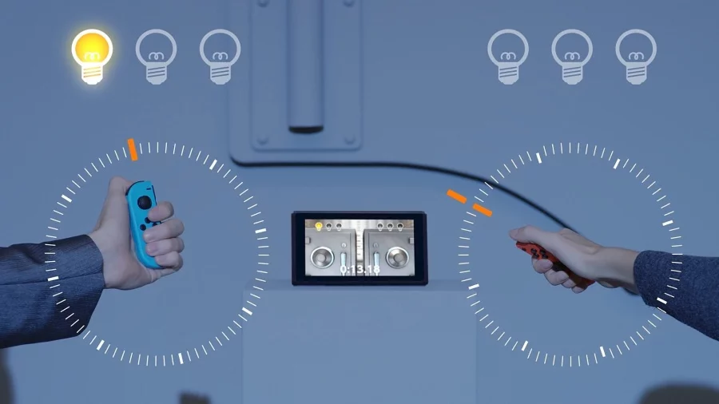

SNIPPERCLIPS
As a Switch launch title, Snipperclips does little to sell the unique features of Nintendo's new console. Playing the game on the go isn't ideal, since the Switch's small screen and the bumpy nature of playing it in cars (or buses, trains, or planes) derails some of the accuracy needed to complete its puzzles. The game also doesn’t make use of the Joy-Cons' advanced haptic capabilities, meaning there's no real benefit to playing with the minuscule controllers--even though you're forced to do so.
So, no, Snipperclips isn't a game you'd buy to show off the capabilities of your sweet new Switch. But it is a game you should play because of its interesting mechanics, fun puzzles, and great cooperative play (and griefing possibilities). Snipperclips makes the most of its unique premise--often in surprising, challenging ways.

It's a lonely pursuit, though, because Snipperclips works best as a shared experience. When you're working with friends and you do finally complete a tough level together, the sense of accomplishment and camaraderie is palpable. Unfortunately, there's no real reason to replay levels--once you've figured out a solution, there's no incentive to try again, since there's no tangible benefit to finding out more efficient solutions. Snipperclips is indeed engaging, but it's likely something you'll only ever play through once. It isn't a Switch showstopper, but when a game is this inventive and appealing, it doesn't need to be.
Other Reviews
THE LEGEND OF ZELDA: BREATH OF THE WILD

BOMBERMAN R

1-2-SWITCH
SHOVEL KNIGHT: SPECTRE OF TORMENT